Contents
- First-time setup
- Supported computers
- Settings
- Device Manager (units on more than one switch, scanning other networks, firmware status)
- Matrix Routing
- Video Wall (zones, discovery, saving walls)
- Primary and fallback passwords
- Production Studio
- The local application port
- Remote Access (HTTP or HTTPS, certificates)
- Accounts and permissions, friendly names
- Routing as a User, Matrix routing, Display Groups, saved video walls
- Direct Access links
- Clearing known devices
- How many units
- Backup and Restore
- Known limitations, Troubleshooting, About
The screenshots show example equipment on example addresses; your names and addresses will differ. Numbered markers in a figure are explained under it.
First-Time Setup
- Open Device Manager (or any page -- Settings is the same everywhere).
- Open the gear button and review Settings: your device password, websocket port, firmware folder, and the Production Studio asset folders (static image / logo). See Settings below.
- Switch Theme (light/dark) and Layout (Classic/Compact) under Appearance if you'd like a different look -- these apply instantly and persist per browser.
- Choose the network adapter that matches the LumaStream subnet. LumaSuite lists the connected wired Ethernet port first, then Wi-Fi, then any other physical adapter, and virtual, VPN and Hyper-V adapters last, so the first entry is normally the right one. A choice you make is remembered and never overridden.
- Press Scan. To also look on another network, type it in Targets — see Scanning other networks.
Supported computers
LumaSuite is released for two kinds of computer, and only these two. Choose the download that matches yours.
| Computer | Download | How far it has been checked |
|---|---|---|
| Windows, 64-bit (Intel or AMD) | The windows zip: one LumaSuite.exe | Started and used on Windows 11. |
| Mac with Apple Silicon (M1 or later) | The arm64 zip: LumaSuite.app | Built and tested automatically on a GitHub Apple Silicon runner. Not yet run on a Mac by the release process. |
There is no download for a Mac with an Intel processor, for Linux, for Windows on Arm or for 32-bit systems. The oldest macOS version that works has not been established. The Windows program is not code-signed, so Windows SmartScreen asks you to confirm the first time. The Mac app is signed only with an ad hoc signature: it is not signed with a Developer ID and not notarised, so macOS Gatekeeper asks you to confirm the first time (right-click the app, then Open).
When LumaSuite checks for a newer release (see About) it offers only the download that matches this computer. On a computer with no download it says There is no supported update package for this computer. LumaSuite releases are built for Windows (x86-64) and macOS on Apple Silicon only. It never says LumaSuite is up to date in that case; the Releases button always takes you to the full list.
Settings
One Settings dialog, opened from the gear button on every page, reading and writing the same configuration -- what you see in Settings is identical no matter which page you opened it from.
Settings is arranged the same way as in OmniSuite, in this order:
Device Communication
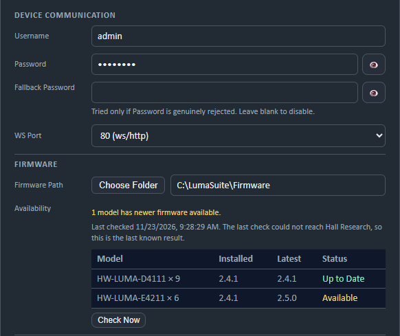
Username and Password are the primary credential LumaSuite uses to talk to your LumaStream devices, and WS Port (80 or 443) is the port it uses. See Primary/Fallback Passwords below for the Fallback Password field.
Firmware
The folder LumaSuite searches for firmware .tar.gz files when you upgrade. This is operator/job-site content — choose the folder rather than typing a developer path, and it is never packaged into the application. Below the folder, Settings summarises firmware availability: whether any model has newer firmware, when Hall Research was last checked, and a table of Model, Installed, Latest and Status (Up to Date, Available or Unknown, with the reason). Opening Settings only shows what is already known — it never contacts Hall Research. Check Now, under the table, asks Hall Research once, right away, and then updates the table and Last checked; if Hall Research cannot be reached the last known result stays on screen and a message says so. Each unit's own status is also in the Device Manager table; see Firmware status.
Production Studio
Separate folders for the static images and logo overlays Production Studio can push to a device.
Appearance
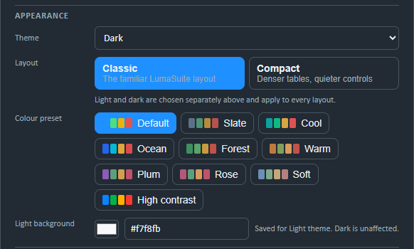
Theme (light or dark), Layout (Classic or Compact — density only, same functionality either way), Colour and Light background. Default is Hallway blue, the same blue as in OmniSuite. Light background is one colour picker (with its hex value) that sets the application background in the Light theme; panel, header and border tones are derived from it so surfaces keep their separation, and it does not affect the dark theme. A value that is not a colour is refused with a message. Reset Appearance restores the defaults, including the light background, without touching devices, routes, or any other setting.
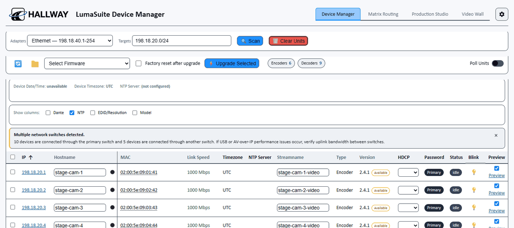
Remote Access
Turning remote access on or off, the network and security it uses, and the certificate. See Remote Access.
Local Application Port
The TCP port LumaSuite's own browser address uses on this computer, shown on the computer LumaSuite runs on only. It is separate from Remote Access. See The local application port.
Backup and Restore
On the computer LumaSuite runs on only. See Backup and Restore.
Application
The installed version, a check for a newer LumaSuite release (opening Settings, or pressing Check Now; there is no setting to turn it off. It only reads the newest release's published details from GitHub, and never downloads or installs anything — the result is shown in green when this version is current, in red when a newer release is available, and in the ordinary text colour as "Unable to check for updates" when the check could not say — a network failure is never shown as if it were current), copyright, and links to the licence information and this User Guide. See About at the end of this guide.
Device Manager Basics
Select Units
Use the left checkboxes to select units for reboot, firmware update, password sync, NTP sync, and Slate Manager actions.
The device table
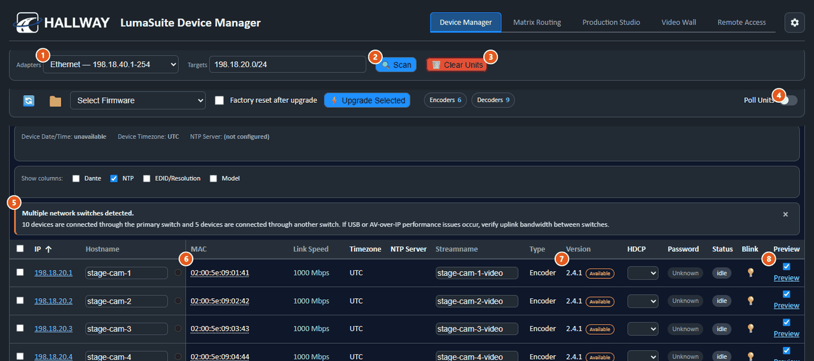
- The network adapter to scan; Targets adds other networks.
- Scan finds units.
- Clear Units empties the list.
- Poll Units keeps unit details fresh in the background.
- The multiple-switch notice.
- The MAC address (hover for the connected switch).
- Firmware version and whether newer firmware is available.
- The unit's own thumbnail switch and picture.
The table is laid out the way OmniSuite's Device Info is: the checkbox, IP and Hostname stay in place when you scroll sideways, so a row is never a line of values with no device name; the header row stays at the top when you scroll down; and a scroll bar sits above the table as well as below it. Click a column heading to sort by it (the arrow shows the direction, click again to reverse); IP addresses and versions sort as numbers, so 1.0.10 comes after 1.0.9. The heading can also be reached with Tab and sorted with Enter or Space.
The counts beside the firmware controls (Encoders, Decoders, and Switchers when there is one) follow the devices that are currently listed. The folder button next to the firmware refresh opens the firmware folder chosen in Settings on the computer running LumaSuite; if no folder has been chosen it says so rather than opening anything.
Preview: the unit's thumbnail
The Preview column shows, for each encoder and decoder, a checkbox with the word Preview beneath it. The checkbox is the unit's own thumbnail switch — the same setting the unit's web page shows on its Info page — and it is read when the unit is scanned. Tick or untick it to turn the thumbnail on or off on the unit itself. LumaSuite asks the unit to change, reads the setting back, and updates the box only once the unit confirms; if the unit does not confirm, the box keeps showing what the unit holds and a message says so. A box that is neither ticked nor unticked means the unit has not reported yet; scan to read it.
While the thumbnail is on, rest the pointer on the word Preview to see the unit's current picture beside the pointer; it refreshes every two seconds while you hover and stops as soon as you move away. Click the word (or press Enter on it) to open the picture in a window of its own that keeps refreshing every two seconds until you close it. A unit that does not answer shows "Preview unavailable" in that window and is tried again. With the thumbnail off the unit produces no picture, so the word explains that instead of opening anything. A CS31 switcher has no thumbnail setting and no Preview column entry.
Link Speed and the connected switch
Link Speed sits beside the MAC address and is what the unit itself reports for its AV LAN port (not its second port), read when the unit is scanned. A gigabit (1000 Mbps) link is shown in green; any other speed is shown in red, because a stream that expects gigabit will not run properly below it. A dash means the unit did not report a speed (for example the cable is unplugged, the unit was not reachable, or a CS31, which is not asked) — it is not a fault. The column sorts by speed, with unknown last.
Hover over, or Tab to, a unit's MAC address to see the switch it is plugged into: the switch name, its management address, chassis ID and the port (the pop-up in Figure 5). This comes from the same scan, so nothing is requested when you hover. If a unit reports no neighbour the pop-up says so; it never guesses a switch. To refresh the speed or the switch after you move a cable, scan again.
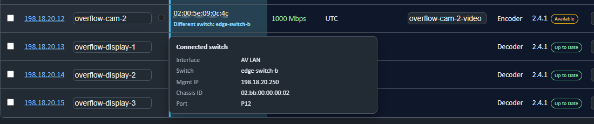
Units on more than one switch
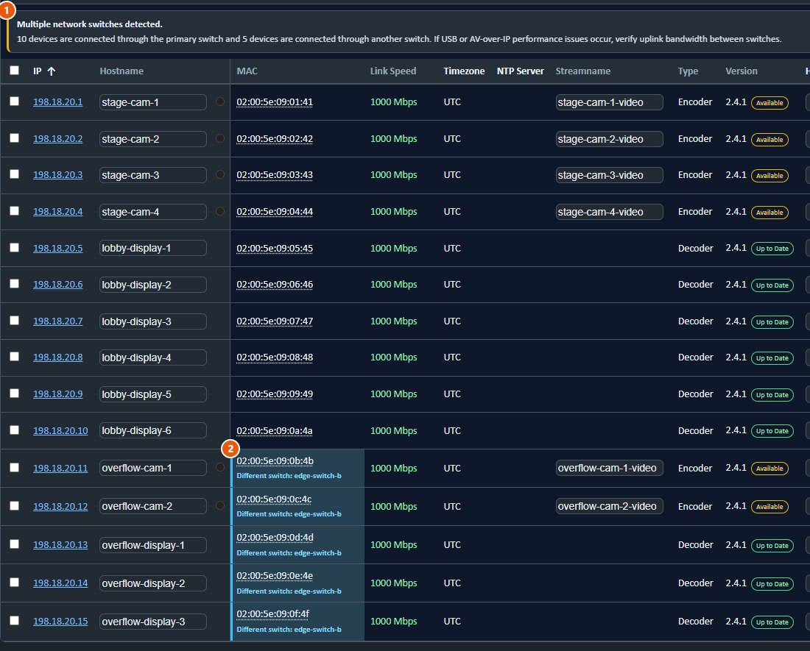
- The notice, with the counts.
- A unit on a switch other than the primary one.
When the units you scanned are plugged into more than one network switch, LumaSuite says so. The switch is identified by the chassis ID each unit's switch reports, never by a unit's address or network, so two networks on one switch are still one switch, and one network spread over two switches is two. The switch that most units are plugged into is the primary switch. A unit on any other switch is marked under its MAC address with Different switch and the name of that switch when it reports one. If two switches have the same number of units there is no primary switch, and no unit is marked.
A notice above the table, Multiple network switches detected, gives the counts (for example “10 devices are connected through the primary switch and 5 devices are connected through another switch”) and reminds you to check the bandwidth of the link between the switches if USB or AV-over-IP problems occur. With three or more switches, or a tie, it says how many switches were found without naming a primary one. This is information, not a fault: units on different switches work normally, and nothing about routing, discovery or any unit changes.
A unit whose cable goes to another LumaSuite unit rather than to a switch is not counted as being on a second switch: LumaSuite follows the cable to the switch behind it, and if that cannot be worked out the unit counts as not reported. A unit that has not reported a switch — its link is down, it reports no neighbour, or it is a CS31 — is simply not counted and never marked; a missing report is not a second switch. Press the × on the notice to dismiss it. The dismissal is remembered by LumaSuite (not just this browser tab) and lasts as long as the list of discovered units does: a scan, a reload or another switch appearing does not bring the notice back, and Clear Units does (so does removing the last unit with Remove Selected). The Different switch marks stay either way. The marks and the notice follow the list as it is now, so a scan, or a unit being read again after you change a setting, updates them. Because the dismissal belongs to the list of discovered units, Clear Units resets it deliberately: after a clear and a new scan that finds several switches, the notice appears once more. A unit listed from an earlier version that has never been read is read once, in the background, a few seconds after the page opens, and then appears; nothing else is requested to build any of this.
The lightbulb in the Blink column asks that device to flash its front panel LED (30 seconds on an encoder or decoder; the CS31 stays on until you press it again). A tick means the command was sent: LumaStream units cannot report whether they are blinking, so look at the unit.
Scanning other networks
A scan looks on the selected adapter's network and on any network you list in Targets, in one scan. Type networks separated by commas, for example 198.51.100.0/24, 203.0.113.1-254. A device does not have to be on the adapter's own network, only reachable from this computer. Choose No adapter — additional networks only to scan just the networks you typed. The list is remembered by LumaSuite, so it is still there after a restart.
To keep a scan quick and safe, LumaSuite counts the addresses before it starts and refuses a request that is too large: one range may cover at most 4,096 addresses (a /20) and a whole scan 8,192, with at most 32 ranges. It tells you which one is too large rather than scanning part of it. A scan only finds devices that answer; a network that is not reachable from this computer returns nothing.
Firmware status
Each device's Version cell shows whether Hall Research has published a newer firmware for that model: Up to Date, Available, or Unknown when it cannot be determined (the reason is in the tooltip). There is no setting to turn this off. LumaSuite looks this up on its own — in the background shortly after it starts, and then every seven days while it keeps running — and also when you press Check Now. It never delays discovery, routing or the page, and it never downloads or installs anything: it only reads the version Hall Research lists for each product.
The last answer is remembered, so it is shown straight away after a restart. If Hall Research cannot be reached the last answer stays on screen, and its tooltip says it is the last answer received and when it was checked; an offline computer never turns a known status into Unknown. After a failed check LumaSuite tries again after six hours rather than waiting a week. The check sends only a request for each product's public page; the request carries the computer's address (as any web request does) and the standard identification of the software making it, and nothing about your devices or network. It reads published firmware versions and nothing else.
Firmware updates
Choose a firmware file from your Firmware folder and upgrade selected units:
- Select the firmware file.
- Select the target units.
- Enable factory reset only when the job requires a clean device configuration.
- Press Upgrade Selected and leave the app open until the status returns to idle or upgrade successful.
NTP Sync
Select units, press Set NTP, choose timezone and server, then sync. The dashboard refreshes NTP values after scan or polling.
Password Column
Shows which credential last authenticated successfully to that device: Primary, Fallback, Auth Failed (both were rejected), or Unknown (no successful call yet). See Primary/Fallback Passwords.
Matrix Routing
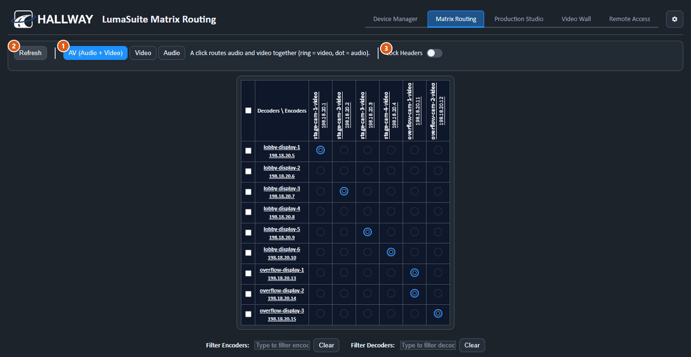
- Audio + Video, Video or Audio.
- Refresh reads the units again.
- Lock Headers keeps the headings in view.
- Open Matrix Routing.
- Choose a mode, then click the cell for the source and decoder. The ring shows where a display's video comes from and the small dot where its audio comes from.
- Route changes are sent live and should behave like fast switching. A route is only reported as successful after the display itself confirms the new source.
- Use refresh if the device state was changed from outside LumaSuite.
- A unit that has stopped answering is dimmed and its cells cannot be chosen: a route needs both the source and the display to be there. LumaSuite also refuses the route if it is attempted another way, and the cells come back by themselves once the unit answers again, whether that is the next refresh or a scan that finds it.
- Rest the pointer on a routing dot to see the source's picture (Figure 8). Nothing is fetched until you do, and the picture goes when you move away.
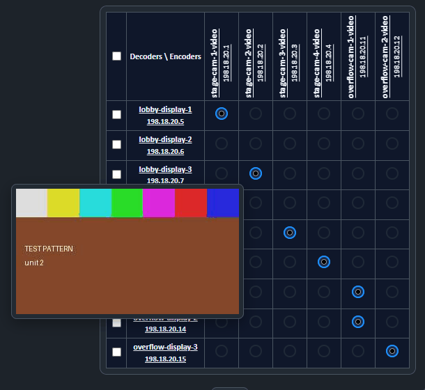
Audio and video modes
- AV (Audio + Video) — the default. The video is routed and the display's audio follows it, the way a LumaStream display normally works. If a display had been given separate audio, AV puts it back to following the video.
- Video — changes only the picture. The display keeps the audio it has now, even though that stops following the video.
- Audio — changes only the sound, and leaves the picture alone. You can choose the source the display is already showing.
- Picture from one source and sound from another — choose Video and click the picture's source, then choose Audio and click the sound's source. Each step is confirmed on the display separately.
Every route is confirmed by reading the display back. If the display accepts a change but does not hold it, the route fails, the display is put back as it was, and the message says whether that was confirmed. A source's audio is checked against the audio the display can actually receive before anything is changed: a source whose audio the display does not list is refused rather than leaving the display listening to nothing. Switchers (CS31) route audio and video together and are not offered the other modes.
A User sees the Audio + Video, Video and Audio choices only in the Matrix routing interface, and only if you gave their account that interface (see Accounts and Permissions). In the ordinary routing page a User's route always means audio and video together: both go to the source you chose, even if a display had been given separate audio. A display whose audio follows its video is left that way; a display that had separate audio is given the chosen source's audio explicitly, and is not changed back to following. Video and Audio in the Matrix change only the picture or only the sound and keep the other as it was. If a source has no audio of its own, only its picture is routed and the result says the audio was not moved.
Video Wall Workflow
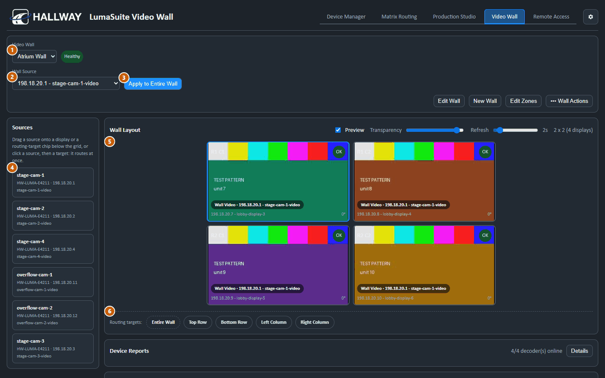
- The saved wall.
- The wall's source.
- Apply to Entire Wall.
- The sources, to drag onto a display or a zone.
- The wall's displays.
- Routing targets: zones and the entire wall.
- Open Video Wall.
- Create or select a saved wall.
- Set Rows and Columns.
- Assign one decoder to each display cell. Assigned decoders are hidden from other cells to prevent duplicate use.
- Select the Wall Video Source. Sources are shown as
IP - stream name. - Set display size and bezel values. If Apply to all is checked, the values apply to every assigned display. If unchecked, values apply only to the selected display.
- Press Apply Saved Wall when building or restoring the complete wall layout.
Sync Source
Use Sync Source when a wall is supposed to be on the selected source but one or more displays drifted. LumaSuite checks each decoder first. If a decoder already has the right stream and wall position, LumaSuite skips the write so video is not interrupted.
Individual Display Breakout
Inside a display cell, choose a source other than Wall Video to break that one display out of the wall. Selecting a new Wall Video Source snaps all displays back to Wall Video.
Video Wall Zones
A Zone is a reusable rectangular group of displays within a Video Wall -- for example a 1×2 pair, a 2×1 pair, a full row or column (1×3, 3×1), a 2×2 corner, or any other rectangular area that fits inside the wall (2×3, 3×2, and so on).
A Physical Wall is the actual arrangement of displays and decoders on the wall. A Zone is a reusable rectangular routing target you define inside that wall -- it doesn't change the physical arrangement, it just gives you a named group you can route a source to as one action.
- Open Video Wall.
- Select the desired saved wall.
- Press Edit Zones.
- Click one corner display, then the opposite corner display, to create or select a rectangular group of displays.
- Give the Zone a useful name (for example "Top Row" or "Left 2x2").
- Save the Zone.
Once saved, the Zone appears alongside the other routing targets below the wall grid. Drag a source onto the Zone to route that source to every display in the Zone in one action. You can also click a source and then click a Zone or a display: the route starts as soon as you click the target. There is no Route button and no second confirmation, and the result (including any display that did not confirm) is reported when it finishes.
Individual displays remain independently routable at any time -- creating or using a Zone never removes the ability to route to a single display. Apply to Entire Wall remains the explicit action for routing a source to every display on the wall at once, separate from any Zone.
Video Wall Mode and Apply to Entire Wall
Select a display to open Selected Display. Video Wall Mode shows whether that decoder itself has Video Wall mode turned on, as the decoder reports it. It reads Unknown until the decoder has been read (press Read or refresh the wall), or when it cannot be read; being listed in a saved wall does not turn it on. Choosing Enabled or Disabled changes the decoder and then reads it back. LumaSuite says the mode changed only when the decoder itself confirms it; otherwise it shows what the decoder really holds and why the change did not take.
Apply to Entire Wall checks every display in the saved wall, turns Video Wall mode on where it is needed, applies the position, source, bezel and rotation, and reads each decoder back. The result is complete only when every display was confirmed. If one display fails (offline, unreadable, or it did not keep the setting) the others are still configured and the result is Partial, naming the display and the reason.
Existing-Site Video Wall Discovery
When you scan a site that already has LumaStream decoders configured into a Video Wall, LumaSuite can detect that existing configuration and let you bring it into LumaSuite without retyping it. The workflow is:
Scan → LumaSuite detects an existing configuration → Review → Confirm or Adjust → Save locally
When LumaSuite notices an existing wall it doesn't already know about, it shows a small notice (on Device Manager, next to the Video Wall tab, and on the Video Wall page itself under "Existing Video Walls Detected"). From there you can:
- Review the proposed wall -- name, size, and which decoder is in which position.
- Confirm the decoder/display placement if it looks right, or correct it first (rename it, resize it, or reassign a decoder to a different position) if the proposed arrangement isn't quite right.
- Confirm & Save to save LumaSuite's understanding of the wall for future use.
- Ignore a candidate you don't want LumaSuite to keep asking about.
LumaSuite describes what it found using plain-language statuses rather than a numeric confidence score:
- Detected -- LumaSuite found a coherent wall layout.
- Possible -- LumaSuite found something that looks like a wall grouping worth reviewing.
- Partial -- some expected wall positions or devices are unavailable or unresolved.
- Ambiguous -- LumaSuite found wall configuration but can't reliably determine the complete physical grouping.
- Conflict -- device information conflicts and requires operator review.
The Review screen also offers a "Why?" toggle with a short plain-language explanation of what LumaSuite found, if you want more detail before confirming.
Saving Wall Configs By Job Site
Export
- Open Video Wall.
- Press Export Config.
- Confirm the export popup.
- Rename the downloaded JSON with the job-site name, for example
north-campus-lobby-video-walls.json.
Import
- Press Import Config.
- Select a JSON that was exported from Video Wall.
- Review the replacement popup.
- Confirm only when you are ready to replace the current saved wall configs.
lumasuite.video_walls.Primary/Fallback Passwords
Settings has a Password field and a Fallback Password field. LumaSuite tries Password first for every device. It tries the Fallback Password only when a device genuinely rejects Password as an invalid credential -- never when a device is offline, times out, or answers with an unrelated error. This means a normal, fully-working network costs nothing extra: only devices actually running a different password ever trigger a second attempt.
Once a device accepts either credential, LumaSuite remembers it for that device and uses it first the next time, rather than re-trying Password on every call. It is remembered against the device's hardware address, so it follows the device if its network address changes, and it is still remembered after LumaSuite is restarted. The Password column in Device Manager shows which one is currently working for each device.
This applies to everything LumaSuite does to a device, not only discovery: routing, Preview, device information, Production Studio (including uploading slates and logos) and Video Wall. A network where some devices use the Password and others the Fallback Password works without changing any device. If a device's password is changed on the device itself, the next action finds the one that works again.
Leave Fallback Password blank to disable this behavior entirely.
Production Studio
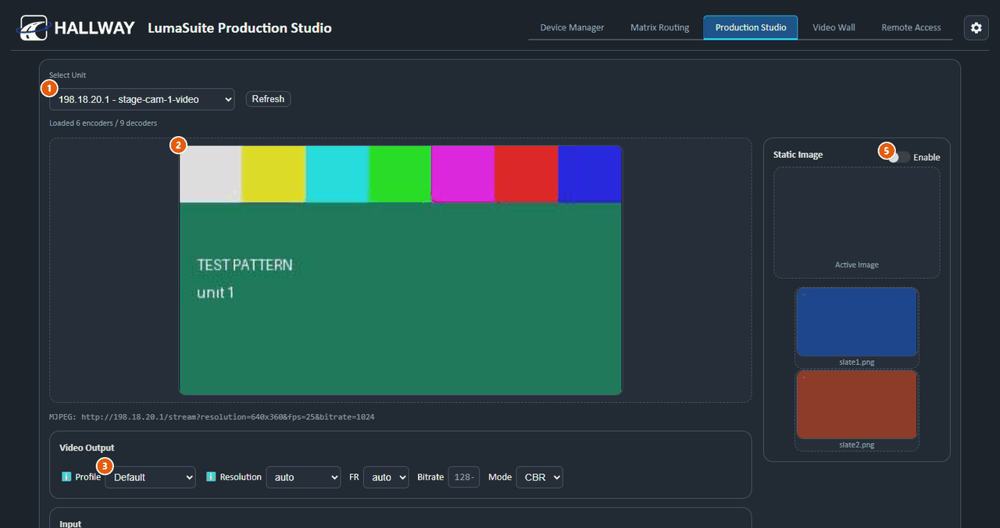
- The encoder being edited.
- Its live picture.
- Video output settings.
- The logo overlay switch.
- The static image switch.
- Select an encoder from the top dropdown. Encoders are shown as
IP - stream name. - Use the preview to verify the selected encoder.
- Adjust output, input, RTMP, ticker, static image, and logo controls as needed.
- Most controls apply live. Use Save buttons where the panel provides them for preset or explicit push actions.
Logo position, height and transparency
The Logo panel has Transparency, Height and Position (Upper Right, Upper Left, Lower Right, Lower Left or Custom). Each change is sent to the unit as soon as you make it; there is no separate Apply. If the unit refuses a value, or accepts it but does not keep it, a message says so and the unit keeps what it had.
- Transparency is 1 to 255 (255 is fully opaque).
- Height is 1 to 100, as a percentage of the output's height.
- With Custom, Horizontal (X) is 0 to 100 and Vertical (Y) is the position of the logo's bottom edge, 1 to 100; it can never be less than the height, because the logo would then run off the top of the picture.
These limits are what the units accept, measured on real equipment, so a value outside them is corrected before it is sent.
Slate Manager
Open Slate Manager from Device Manager, select encoders or decoders, choose a 1280x720 or 1920x1080 image, and upload. Load Default and Save restores the factory image.
The local application port
LumaSuite shows its address in the launcher window (for example http://127.0.0.1:8090) and opens it in your browser. By default LumaSuite starts on its normal port and, if that port is already in use, quietly takes the next free one, so the address can differ from one start to the next. This is the port of LumaSuite on this computer; it is not the port Remote Access uses.
Keeping the address the same
- On the computer LumaSuite runs on, open Settings and find Local Application Port. It shows the address in use now.
- Tick Use a fixed TCP port. The window offers the port LumaSuite is using right now; keep it or type another between 1024 and 65535.
- Press Save and Restart. LumaSuite closes, releases the port and starts again on it. Cancel changes nothing. Unticking the box (and confirming) returns to automatic selection.
If the fixed port is busy when LumaSuite starts
Another program may be using the port. LumaSuite never moves to a different port without being told to. The launcher stays open and says Server could not start — Configured TCP port N is already in use, with four buttons:
- Retry N tries the same port again, for example after you closed the other program.
- Start on Alternate Port runs LumaSuite on a free port for this session only. The launcher shows the address to open. Your saved port is not changed, and the next start tries it again.
- Change Fixed Port opens a small window: type a new port and press Start. LumaSuite starts on it and saves it only if it starts. If that port is busy too, nothing is changed and you can try another.
- Exit closes the launcher without changing anything.
You never need to edit a file, delete application data or stop a program to get past this. While LumaSuite is running on a temporary port, Settings shows Running temporarily on TCP port N with the port you configured, and offers Retry Fixed Port, Make N Fixed (keep the port it is on) and Change Fixed Port.
Remote Access
Remote Access lets people on your network open LumaSuite from another device: an administrator gets the normal LumaSuite pages, and a User gets a simple page for routing the sources and displays they were given. It is off until you turn it on, and LumaSuite on this computer works exactly as it always has whether it is on or off.
Turning it on
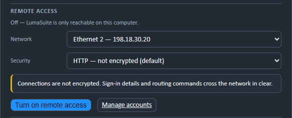
- On the computer LumaSuite runs on, open Settings and find Remote Access. If there is no administrator yet, create one there. It can only be created on this computer.
- Choose the Network other devices will use. LumaSuite remembers the network adapter, so a changed address does not lose the setting.
- Choose Security. It starts on HTTP, which is not encrypted (see below). To encrypt, choose HTTPS; if you turn Remote Access on with HTTPS chosen and there is no usable certificate, LumaSuite stops and asks what you want: Create Certificate (makes the certificate and carries straight on to the last question, Turn on remote access?, which shows the network and the security; the creation is not confirmed a second time, and making a certificate never turns anything on by itself), Change to HTTP (selects HTTP and carries on to the HTTP confirmation), or Cancel (changes nothing; it is selected when the dialog opens). If LumaSuite already has a certificate it created but that certificate is for another network, cannot be read or has expired, the question names the problem and the first button reads Regenerate Certificate, and says the fingerprint will change. A certificate you supplied is never offered a replacement: the choices are then Change to HTTP or Cancel, and the message says to fix or remove your certificate in Settings. It never creates a certificate, or switches to HTTP, without being asked. If you have no certificate yet, press Create one for this network (Regenerate certificate once one exists), or Use my own files to choose a certificate and key you already have. The certificate line is shown only while HTTPS is chosen; with HTTP chosen there is no certificate to describe and Settings says nothing about one. The HTTPS choice says what certificate there actually is: certificate active for the one LumaSuite created, custom certificate active for yours, or certificate required when there is none, it cannot be read, it has expired or it was made for another network. Active means LumaSuite can serve HTTPS with it; it does not mean your browser trusts it, and a certificate LumaSuite created for itself will make the browser warn.
- Press Turn on remote access and confirm. Settings shows the address other devices should open, and a Remote Access entry appears in the main navigation straight away, in every open LumaSuite window of this browser, without refreshing (it disappears the same way when you turn Remote Access off, and a window that was showing the Remote Access pages moves to the main page), next to Video Wall, for administrators. It leads to accounts, device names, display groups and activity. While remote access is off the entry is not shown, because nobody could sign in to use what it manages; the controls that turn remote access on stay in Settings.
If the computer's address changes while Remote Access is on. Remote Access keeps listening on the address it was started on; it does not move by itself, and LumaSuite never moves it or makes a new certificate for you. Settings notices on every read and says so, for example This computer's address changed from A to B. Remote Access is still listening on A. Turn Remote Access off and on to move it. A direct link is shown for the address that is actually working, with the same note beside it, and it changes to the new address when Remote Access is moved. When you turn Remote Access back on, a certificate made for the old address leads to the same question as above (Cancel, Change to HTTP, Regenerate Certificate). If the address changed while Remote Access was off, nothing is said until you turn it on, and then the same question is asked.
If remote access was on when LumaSuite last closed, it comes back on when LumaSuite starts, as long as the administrator, the network adapter and the certificate are still there. If one is missing, Settings says which, and remote access stays off. LumaSuite never switches to a less secure setting by itself.
HTTP or HTTPS
HTTP is the default, and it is not encrypted. Passwords and routing commands cross the network in clear, so use it only on a network you trust. Settings says so whenever it is in use, and LumaSuite asks you to confirm it explicitly. The sign-in protections are the same either way: sessions, the request checks that stop another website acting for you, the lock-out after repeated wrong passwords, and the account permissions do not depend on HTTP or HTTPS.
HTTP is the default because of the certificate, not because encryption is unwanted. A certificate is only valid for the address it was made for, and a computer whose address comes from DHCP can change address at any time; a browser then refuses the connection, and a certificate LumaSuite made for the old address cannot be used for the new one. HTTPS stays available: choose it in Security.
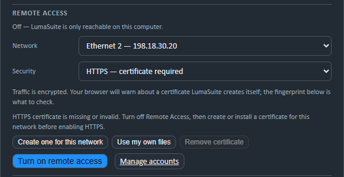
With HTTPS chosen and no certificate, Settings says so and offers Create one for this network or Use my own files. If you press Turn on remote access anyway, LumaSuite asks what you want instead of guessing:
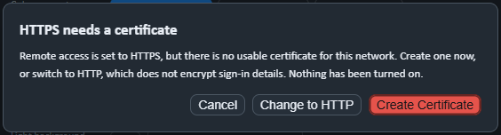
HTTPS encrypts everything between the browser and LumaSuite, including passwords. A certificate that LumaSuite creates for itself is self-signed, so browsers do not know who issued it and the first visit shows a warning. That is expected, and it is not a fault: certificate active in Settings means LumaSuite can serve HTTPS with it, never that a browser trusts it. Compare the fingerprint shown in Settings with the one in the warning before you continue. If the network's address changes, LumaSuite will not start HTTPS on the new address with the old certificate, and asks you to create a new one. A certificate you supply is used as it is, whatever name it carries: Settings calls it custom certificate active, LumaSuite never replaces it, and the browser warns or not according to who issued it.
Certificates
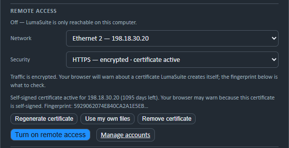
Once a certificate exists, Settings shows the address it was made for, the days it has left and its fingerprint. Pressing Turn on remote access then asks one last question, which states the network and the security that will be used (Figure 15). Making a certificate never turns Remote Access on by itself.
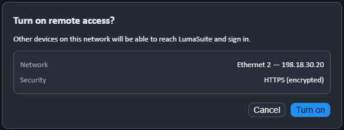
What a created certificate says. It is issued to this computer's Windows machine name, by Hall Research, unit LumaSuite, and it is valid for two names: the machine name and the address of the network adapter chosen for Remote Access. Open LumaSuite by that address and the name matches. Opening it by the machine name matches too, but only works where your network can already find that name; a plain machine name is not found across routed networks, and LumaSuite does not add any other name. If you need a name your own DNS resolves everywhere, create the certificate yourself with that name and use Use my own files.
How long it lasts. A created certificate is valid for three calendar years from the day it was created (a certificate created on 29 February ends on 28 February three years on). Settings shows the days left. When it has expired, or the network changed, Settings says certificate required.
Replacing a created certificate. LumaSuite never replaces a certificate by itself, and a certificate created by an earlier version keeps working until it expires. To replace it, turn Remote Access off and press Regenerate certificate (the button reads Create one for this network when there is none). LumaSuite asks first and, afterwards, shows the old and new fingerprints: the fingerprint changes, so browsers warn again until the new certificate is accepted. A certificate you supplied is never replaced by this button, or by the question asked when you turn Remote Access on; remove it first if you want LumaSuite to create one.
A certificate for another address is refused, not quietly replaced. A certificate is only valid for the addresses it carries. If the chosen network now has a different address from the one the certificate was made for, LumaSuite will not start HTTPS with it: Settings says the certificate does not cover the address, and turning Remote Access on asks you to regenerate the certificate for this network or switch to HTTP (Figures 16 and 17). It never issues a new certificate by itself, because that would change the fingerprint you checked behind your back. A certificate you supplied is never offered a replacement.
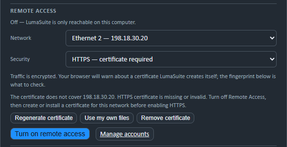
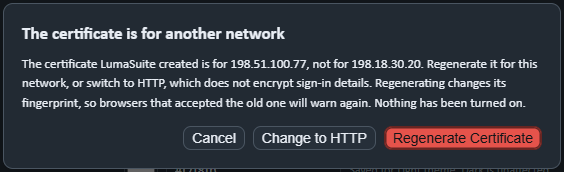
The browser warning. A browser will warn the first time it meets a certificate that LumaSuite created, because the certificate is self-signed and no authority vouches for it. That is expected. Compare the fingerprint the browser shows with the one in Settings and continue only if they match; the exact wording of the warning depends on the browser.
Signing in from another device
Open LumaSuite by the address shown in Settings, by this computer's name, or by a name the certificate you supplied carries. Opened by any other name, even one that leads to the same computer, the page is refused with “This address is not one this listener is served on”; use the address Settings shows. The port Remote Access uses is chosen automatically and must be between 1024 and 65535.
Open the address from Settings and sign in with a username and password. An administrator lands on the normal LumaSuite pages with Sign out beside the Settings gear; a User lands on the routing page. After repeated wrong passwords, sign-in is paused for a while. Turning remote access off asks first (Everyone signed in from another device will be signed out) and then signs everyone out.
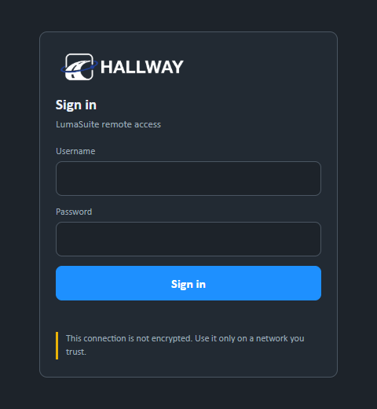
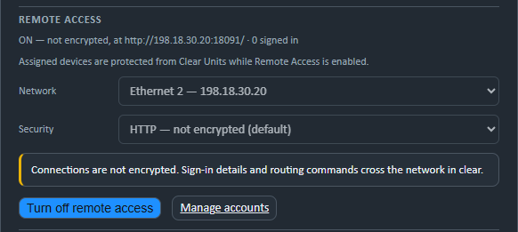
What stays on this computer
Some things only make sense, or are only safe, on the computer LumaSuite runs on, so a remote administrator cannot do them and is not offered the controls: choosing folders on that computer, showing the device passwords in Settings, creating the first administrator, and exporting or restoring a backup. A remote administrator can do everything else the normal pages do, with one more limit: only on devices LumaSuite has already found. Asking it to act on an address it has not found is refused ("is not a device this application has found"), and a scan started from a remote session may cover private network addresses but not public Internet, loopback, link-local or multicast ones; do those from this computer. This stops a stolen sign-in from being used to send the device password to a machine of someone's choosing.
Accounts and Permissions
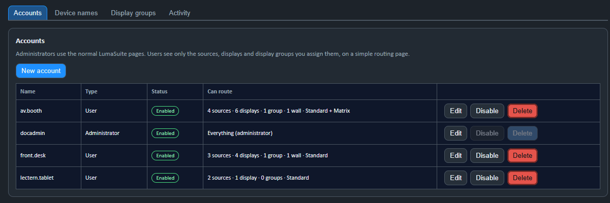
Open Remote Access from the main navigation (it is there while remote access is on; Settings also leads to it). The page has four tabs: Accounts, Device names, Display groups and Activity. There are two kinds of account:
- Administrator — the normal LumaSuite pages. At least one enabled administrator always remains: the last one cannot be disabled, demoted or deleted.
- User — the restricted routing page only, and only for what you assign: the sources they may route, the displays they may route to, the display groups they may route to, and the saved video walls they may route to. These are separate lists. A User never has Production Studio, Video Wall or any setting.
An account is edited in this order: role, username, password, Direct access, Routing interface, then what they may use (sources, displays, display groups, saved video walls). Passwords must be at least 8 characters; there are no other rules. Changing a password signs out that account's password sign-ins; changing the account's type signs out everything it has open. A page opened from a Direct Access link keeps working after a password change, because the link has its own life (see Direct Access Links). Changing what an account may use does not: it takes effect on the very next thing that person does, and an open routing page updates itself within about twenty seconds (anything that was taken away is deselected and cannot be routed). Assignments are remembered by each device's hardware (MAC) address, so a device that gets a new network address keeps its name, its assignments and its place in groups.
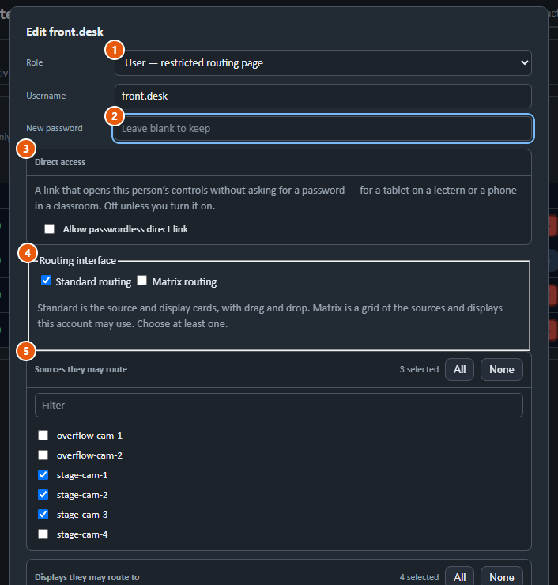
- The account type.
- A new password (leave blank to keep the current one).
- Direct access.
- Which routing interfaces the account may use.
- What the account may route.
Activity
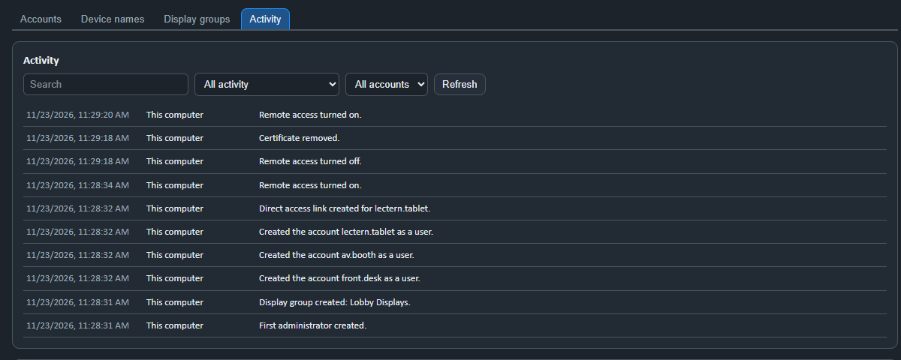
The Activity tab lists sign-ins, changes to accounts and access, routes, refusals and remote-access changes in plain sentences, newest first, and can be searched and filtered. Passwords, tokens and links are never recorded.
Activity is not kept forever. Entries older than 30 days are removed, and the log is also kept under 4 MB, removing the oldest first if it would grow past that. Both limits always apply, and you can change them under How long activity is kept on the Activity tab: from 1 to 365 days, and from 1 to 64 MB. A shorter period or a smaller size takes effect at once and the change is itself recorded. Roughly, 4 MB holds about twelve thousand entries — over 400 a day for the whole 30 days.
Friendly Names
On the Device names tab you can give sources and displays the names people will see, such as "Main Stage" or "Lobby Left". A name is only a label: it is stored by LumaSuite, never written to the device, and never decides who may route what. If two devices end up with the same name, people see them told apart by their location where the device has one. The Assignments column shows who holds each unit.
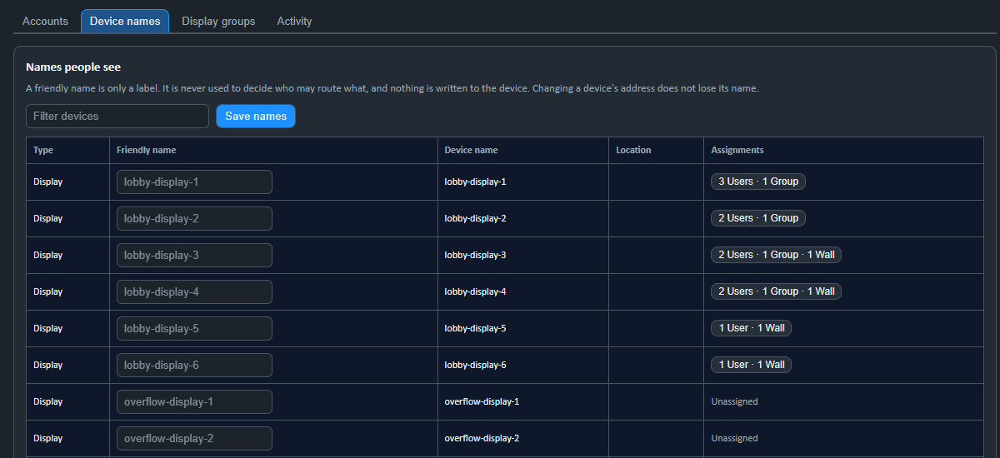
Routing as a User
Routing interface. For each User you choose which of two ways of routing they may use, in the account's editor under Routing interface: Standard routing (the source and display cards below, including dragging a source onto a display) and Matrix routing (a grid, described under Matrix routing). Choose one or both; at least one is always required. If both are chosen the User sees two tabs, Routing and Matrix, and the page remembers which one they used last on that device. If only one is chosen there are no tabs and the other interface is not offered at all. Accounts that existed before this setting keep Standard routing and gain no Matrix. Dragging is part of Standard routing, not a separate permission. The choice is checked again on every action, so removing an interface takes effect on the person's very next action and an open page moves to the one they still have, without signing in again.
A User sees sources across the top and displays below: saved video walls first, then display groups, then individual displays.
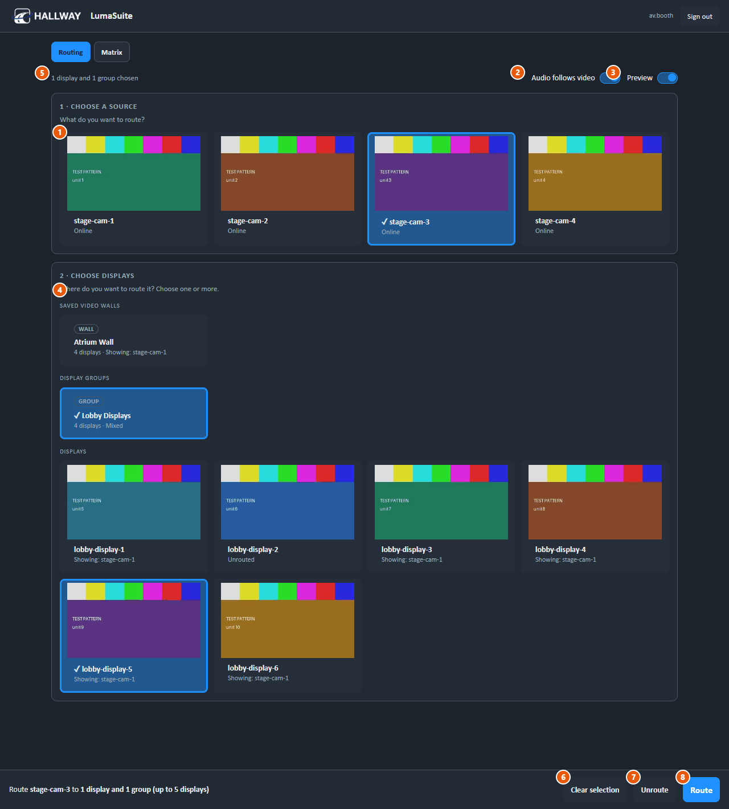
- Sources.
- Audio follows video.
- Preview.
- Walls, groups and displays.
- What is chosen.
- Clear selection.
- Unroute.
- Route, which says what it will do.
- Choose one source.
- Choose one or more displays, display groups and saved video walls. Each chosen card is ticked and outlined, the page counts what you have chosen, and choosing a card again removes it.
- Press Route. It stays unavailable until a source and at least one destination are chosen, and says which is missing.
The bar at the bottom. Clear selection, Unroute and Route sit together at the bottom of the page. Clear selection forgets the source and every display, group and wall you had chosen; it changes nothing on any display. Unroute needs no source: choose one or more displays or display groups and press it, and each of them is set to show nothing (its video and audio are unsubscribed). It checks each display afterwards, reports which ones did not change, and never touches a display you did not choose. A saved video wall cannot be unrouted from here, so choosing one holds Unroute back.
Or drag. You can also drag a source onto a display, a group or a wall to route it there at once. It does exactly what choosing both and pressing Route does, for that one destination only; whatever you had chosen is left alone. A destination that cannot take the source, because it is offline or is not yours, does not accept the drop, and clicking a card never routes anything. Choosing and Route work from the keyboard as before; dragging is an extra, not a replacement.
Offline equipment. A source, display, group or wall that is not answering stays on the page, dimmed and marked Offline, and cannot be chosen, dragged or dropped on. LumaSuite calls a unit offline after it has missed two refreshes in a row, so one dropped reply does not grey out a working unit; OmniSuite decides offline from its own observations, with the same meaning and the same refusal. If it goes offline while chosen it is deselected. A group or wall with only some members offline can still be used; the result names the members that did not change.
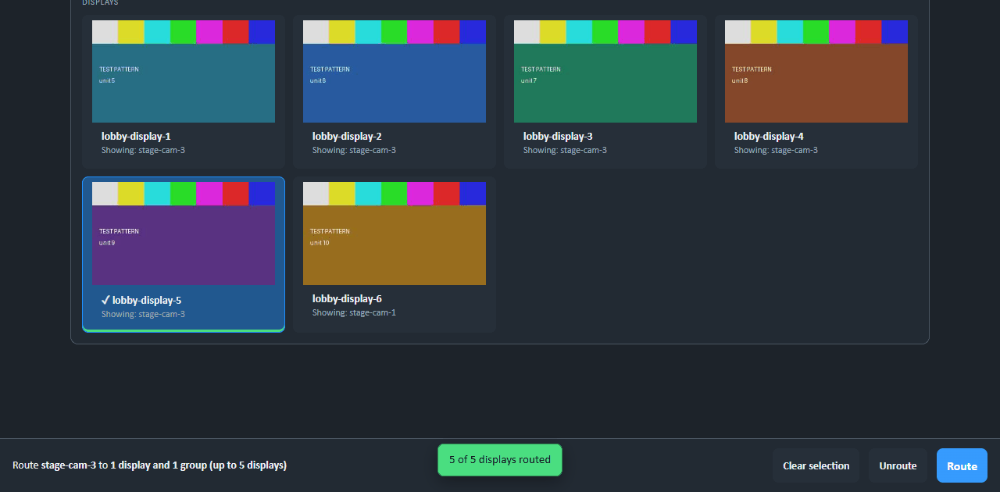
If you choose a display and also a group that contains it, that display is routed once. LumaSuite checks everything you chose first and then sends the change to all of the displays together (a few at a time for a very large selection), so a room switches at about the same moment instead of one display after another. Each display is confirmed on its own. If one does not answer or does not confirm, the rest are still done and nothing already routed is undone; the result says how many were routed, for example 3 of 4 displays routed, and names any that were not. Your choices stay selected afterwards so the same routing can be repeated. Choosing a display group lets you route to the group only; to pick one of its displays on its own, the display must be assigned to you as well.
Audio follows video. This switch, beside Preview at the top of Routing, decides what a route changes. With it on (the default every time the page opens) a route sends both the picture and the sound of the chosen source, to every display, group and wall you route to, whether you press Route or drag. With it off a route changes the picture only and each display keeps the audio it already had. It applies to everything on the Routing page for as long as the page is open; it is not stored and it is not a permission. The Matrix is not affected: its Audio + Video, Video and Audio choices always do exactly what they say.
The Preview switch at the top of the page turns pictures on or off, and the page remembers your choice on that device. Each source card shows the encoder's own preview picture, and each display card shows that display's own preview of what it is currently outputting. With Preview on, pictures are fetched for the cards on screen and then refreshed every five seconds while the page is open and visible; a display you have just routed is refreshed straight away, and the five seconds start again from there. Cards scrolled out of view, a page in a hidden tab, a page you have left and a page with Preview off make no requests, and a slow device is never asked again before it has answered. With Preview off the page asks for no pictures at all. Pictures are fetched by LumaSuite on your behalf, so the person's device never contacts the equipment and never learns its address. If a device has no picture available the card says No preview; routing still works. A CS31 switcher has no picture and is not asked for one. A card for a device that is offline stays visible and says so.
Pictures load three at a time, so a route you make is never held up behind a slow picture. If a display cannot receive the chosen source's audio, nothing is changed and the message says so, whether you routed from the cards, by dragging, or from the Matrix. A route is only reported as done once the display itself confirms it. If the display accepted the command but does not hold the new source, you are told it did not confirm. Audio and video are one route: both go to the source you chose. A display that follows video keeps following it; a display that had been given separate audio is given the chosen source's audio as well. If the display cannot receive that source's audio, nothing is changed and you are told so. A source with no audio of its own routes only its picture, and LumaSuite says the audio was not moved.
You do not have to wait between routes. The page is never locked while a route is on its way. Press Route or drop a source on a display, and while that one is being sent you can route another source to another display, group or Matrix cell straight away. Only the display (or group, wall or Matrix row) being routed to waits for its own route to finish; trying to route it again in that moment says Still routing. The pages do not reload after each route: only the card you routed changes, and the displays are read again once, when the routes have finished.
Routing, confirming, routed. A card says Routing… while its command is on its way. Some displays take a few seconds to report a source they have already taken. When that happens the card says Confirming… with a blue edge — it is not shown as failed — and LumaSuite looks at the display again a few times, over about ten seconds, without sending anything. If the display then reports the new source the card turns green and the route is reported as done. Only if it never does is the route reported as Sent, but the display did not confirm it and the card marked red. Each display, group and wall you chose is marked on its own, so one that did not change never marks its neighbours. In the Matrix the cell you pressed shows the same blue edge while it is waiting and a red edge only when the route is confirmed not to have worked.
If someone else is changing the same display at that moment, you are asked to try again in a moment. The page works on a phone, follows the light or dark theme and colour preset you chose, and reads what you may use when it opens, after your own action, and when an administrator changes your account. The only thing that refreshes on a timer is the pictures, as described above.
Matrix routing
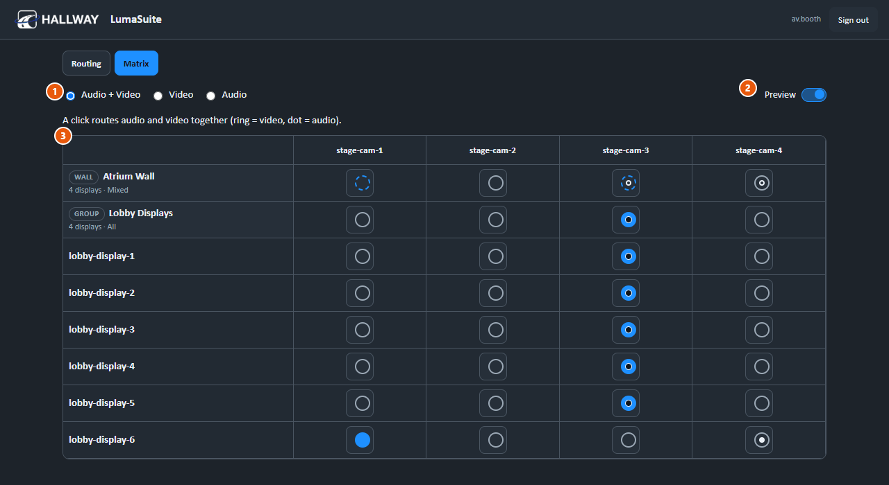
- Audio + Video, Video or Audio.
- Preview.
- The grid: ring is video, dot is audio.
The Matrix shows only what that account was given: the sources they may use run across the top and the destinations they may route to run down the side, as one row each: saved video walls, then display groups, then individual displays, each marked with its type. A group or wall is one row, never expanded into its displays, and having a group or wall does not give the displays in it.
- Pick Audio + Video, Video or Audio above the grid, then press the cell where a source meets a destination. Nothing is routed by anything else. A wall row works in all three: Audio + Video sends both to every member of the wall, Video changes only the picture and each member keeps its own audio, and Audio changes only the sound and each member keeps its own picture. The wall is one row, so you need only the wall's permission, not one for each display in it; LumaSuite works out which displays belong to the wall when you press, skips any that are offline, and says how many changed (for example 3 of 4 displays).
- Each cell shows what the display is doing now: the ring is video and the dot inside it is audio. Video from one source and audio from another (a breakaway) simply lights two different columns in one row.
- A group or wall is lit fully only when every one of its displays has that source. If only some do the cell is dashed, and the row says Mixed when its displays differ, Not available when none answers, or how many are offline. A display that is offline never counts as having the source.
- An offline source or display cannot be pressed, and LumaSuite refuses the route if it is attempted another way. Routes to groups and walls work exactly as in Standard routing: the displays change together, each confirmed on its own, with a result such as 2 of 3 displays routed.
- Resting the pointer on a routing dot (the cell where a source meets a display) shows that source's preview for as long as the pointer stays there, if the Preview switch is on and the device has a picture; it goes when you move away or press the dot. Hovering a source heading alone does nothing. Nothing is fetched when the page opens and nothing refreshes by itself.
- When an administrator changes the account, the grid follows within about twenty seconds: sources, displays, groups, walls and the interfaces themselves appear or go away.
- A Direct Access link follows the same interface choice as the account it belongs to.
Display Groups
A display group is a named set of displays that all receive the same source, for example Lobby Displays. It is not a video wall: there is no layout, so each display shows the whole picture. Video Walls are separate and are not affected.
Creating and editing
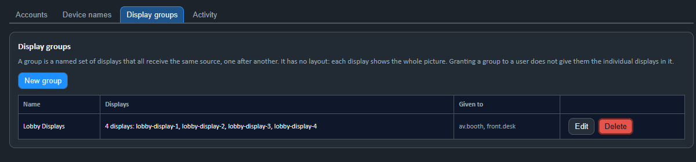
Open Remote Access, then Display groups, and choose a name and the displays in it. A display can be in any number of groups. Members are remembered by hardware address, so a display that changes network address stays in its groups. Deleting a group tells you which accounts had it and does not touch the displays.
Who can use a group
Give a User a group on their account. That lets them route to the group, and nothing more: it does not give them the displays in it individually, and the page does not list the members. To let someone also route to one display on its own, assign that display to them as well. Changing a group's members takes effect immediately.
How a group routes
One press of Route sends the source to all the displays of the group together, not one after another, and then asks each display what it is showing. If one display does not answer or does not confirm, the rest are still done and nothing already routed is undone. The result says how many were routed, for example 3 of 4 displays routed, and names any that were not.
A group only ever changes its own members. LumaSuite finds each member by hardware address, and before it changes a display it asks the unit at the address it has on record which hardware it is. If another unit now answers there (an address that was handed to a different display), or the unit will not say, that display is not changed and the result says so; scan again to refresh the addresses. If LumaSuite holds more than one address for the same member it does not guess, and the result asks for a scan. A scan never gives one unit the identity of another.
A group card shows how many displays it has and what they are showing: the source's name when they all agree, Mixed when they differ, Unrouted when none is routed, and how many are offline. A group never shows a combined picture.
Everything you have chosen is routed together. The page remembers which groups, displays and video walls are ticked. If you choose group A, route, and then choose group B, group A is still ticked, so the next Route sends the source to A and B. The Route button always says what will happen before you press it, for example Route Alpha Camera to 2 groups (up to 6 displays); the number is a ceiling because two groups can share a display. Use Clear selection beside the selection count to start from nothing.
Saved Video Walls for Users
A saved video wall (one you built and saved on the Video Wall page) can be given to a User as a destination of its own. On the account, tick it under Saved video walls; only saved walls are listed. The User sees it by name, with how many displays it has, and routes a source to it like any other destination.
- Giving someone a wall does not give them the displays it is made of, and a display or a group never stands in for a wall.
- Routing to a wall uses the wall exactly as you saved it, the way the Video Wall page's Sync Source does: every display that follows the wall's source is sent the chosen source and then asked what it is showing. A display you gave its own source, or put in a region, keeps it. The User cannot create or change a wall, and sees no wall settings.
- A wall is only reported as done when every display that follows it confirmed the new source. If a display is offline or did not confirm, the result says how many changed, for example Only 3 displays of 4 changed, and the display that is offline is never written to.
- A wall, like a group, only changes its own displays. Before a display of the wall (or the Video Wall page's Sync Source) is changed, LumaSuite asks the unit at the address it has on record which hardware it is, and does the same for the wall's source. A display that answers as a different unit, will not say, or has more than one address on record is not changed, and the result says why; scan again to refresh the addresses.
- After a successful route the saved wall's source is updated to match what the displays are now showing, so the Video Wall page agrees.
- Renaming a wall, changing which displays are in it or changing its settings reaches a signed-in User within about twenty seconds, and is used by their very next route. Deleting a wall takes it away from everyone who had it, at once.
- Clear Units does not delete saved walls. While Remote Access is on, the decoders in a saved wall and the wall's source are kept; with Remote Access off, a wall whose displays were cleared stays in the list and shows them as offline until the displays are found again.
Direct Access Links
For a wall panel or lectern tablet where nobody can type a password, a User account can have a direct link. Open it and the routing page appears, with the same limits as that account. In the account's editor, Direct access sits directly under the password; tick Allow passwordless direct link and the link is shown there to copy.
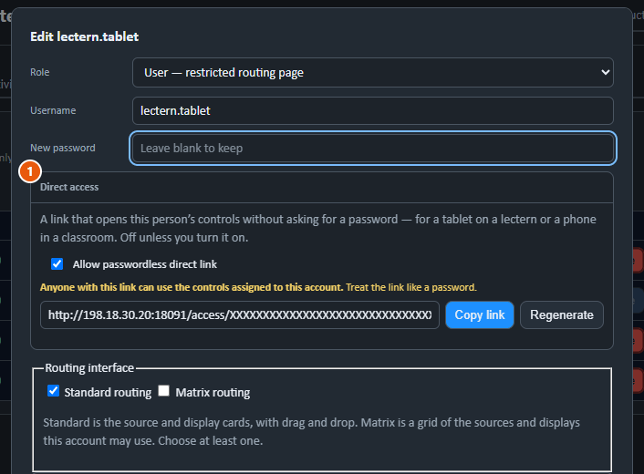
Anyone with this link can use the controls assigned to this account. Treat the link like a password. A link is a password written into a web address: it stays visible in the browser's address bar and history, in a screenshot and in anywhere the address is pasted or shared. It is bounded rather than hidden: it opens only the routing page, it can be switched off or replaced in one action, and an administrator account cannot have one.
When the address changes. A link contains the address Remote Access was serving when you copied it. If you choose another network, or the computer is given a different address, a copy of the old link points at nothing. Settings then says how many direct links were handed out for an earlier address, and in the account's editor the link shown is already the new one, with a note giving the old and the new address that stays until you press I have shared the new link. The long code in the link has not changed: it works at whatever address Remote Access serves, nobody is signed out, and the old address stops answering because nothing is listening there any more. If the old address may now belong to a different device on your network, press Regenerate instead: that stops the old link everywhere.
- It stays valid until you turn it off or regenerate it. It does not expire from time or inactivity, and a panel that has been idle for weeks still works.
- Only one link is live per account. Regenerate makes a new one and the old one stops working immediately, including on a device that saved it; the new link works straight away, even if you tried the old one several times first. Changing the account's password does not change its link. Untick Allow passwordless direct link to turn it off.
- It can only reach the routing page. It can never open the administrative pages, and administrator accounts cannot have one.
- The link's secret is never written to LumaSuite's log: the request line keeps only its first few characters, enough to tell two attempts apart and not enough to use.
- A link shows no sign-in or account controls.
- It follows the account's routing interface: Standard routing always routes audio and video together, and Video or Audio alone are available only through the Matrix interface if the account has it.
Clearing Known Devices
Clear Units is local and immediate. It empties LumaSuite's own list and does not wait for any unit to answer, so it finishes at once even when many units are switched off or unreachable. Anything LumaSuite was still doing for the cleared units (a scan, a poll or a route already under way) is stopped or its result is discarded, and a page that was opened before the clear cannot bring a cleared unit back: a route sent for a unit that is no longer listed is refused with a message to refresh the page, and nothing is sent to any device. Units come back only when you scan again. Clearing the list also resets the multiple-switch notice, because that notice belongs to the discovered list.
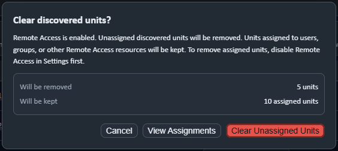
Clear Units (on Device Manager and under Remote Access > Device names) behaves in one of two ways, depending on whether Remote Access is on.
Remote Access off. It asks once, then empties the discovered inventory. The cleared devices are also removed from every account's sources and displays, from display groups and from the friendly-names list, so nobody keeps a control for a device LumaSuite no longer knows. Scan again to find the devices; they then appear for new assignments, but nothing is assigned back automatically. Display groups keep their name and the people who hold them, with no displays in them until you add some.
Remote Access on. Units that are in use by Remote Access are kept: a unit given to a user (as a source or a display, including through a Direct Access link), a member of a display group, a decoder in a saved video wall, or the source a saved video wall uses. Only the other units are removed, along with their friendly names. Nothing Remote Access holds changes: no account, group, wall or permission is edited, and people who are signed in see no difference. The question has three answers: Cancel, View Assignments and Clear Unassigned Units. View Assignments lists each unit that will be kept and what is keeping it: its type, friendly name, device name, how many users, groups and walls use it, and who they are. For a saved video wall it says why the unit is held (Member of wall … or Source of wall …) and who holds that wall. To remove an assigned unit, take the assignment away, or turn Remote Access off in Settings and clear again. There is no one-step “turn off and clear everything”.
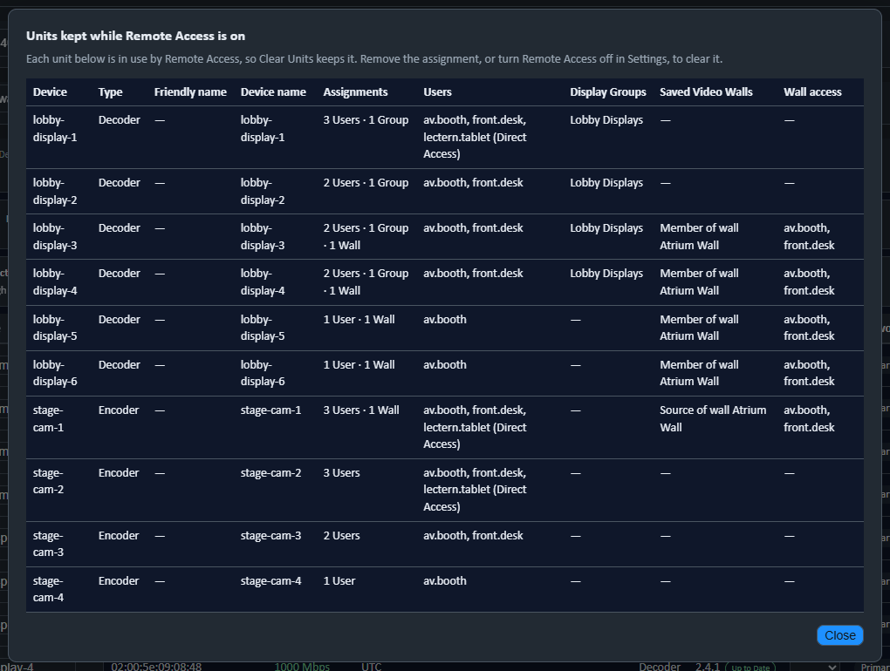
Remove Selected follows the same rule. With Remote Access off it removes the units you selected and what pointed at them. With Remote Access on it removes only the selected units nothing uses, keeps the others, and shows you the ones it kept and why. If every unit you selected is in use, nothing is removed and it says so. It never edits an account, group or saved wall.
Under Remote Access > Device names, the Assignments column shows the same information for every device: Unassigned, 1 User, 2 Users · 1 Group · 1 Wall. Select one to see the names, including Wall access, the people who hold a wall the device is part of (holding a wall does not give someone its displays). It is read fresh from the saved accounts, groups and walls, so a change shows as soon as you open or return to the page.
Saved video walls are saved configuration rather than inventory, so they are never deleted by Clear Units, together with who holds them. A wall whose displays were cleared (Remote Access off) shows them as offline until they are found again.
How many units
LumaSuite is qualified for inventories of up to about 250 units. That is the size at which it was measured to stay responsive: Device Manager, Matrix Routing, Clear Units and the Remote Access pages all behaved normally, with no background work holding up what you were doing.
- Background refresh in batches. With more than 32 units listed, the Device Manager's background detail refresh (Poll Units) reads the units in batches of at most 32, one batch at a time, instead of asking about every unit at once. The refresh of a long list therefore takes several rounds, and a unit that accepts a connection but does not answer is left out of the next rounds for a growing interval.
- Beyond 250. Inventories of 500 and of 1,000 units were also tried. They still work, but rounds are long and the Matrix Routing page opens slowly (a few seconds at 1,000 units). Clear Units still finished in under a second at every size tried.
- How this was measured. With simulated units on one computer, most of which did not answer, as a site with many switched-off units would behave. It was not measured with that many physical units, and a site where every unit answers will see longer refresh rounds than the figures above suggest.
For a site this large, scan in sensible ranges (see Scanning other networks), leave Poll Units off unless you need live status, and use Clear Units to start from a clean list rather than waiting for old entries to age out.
Backup and Restore
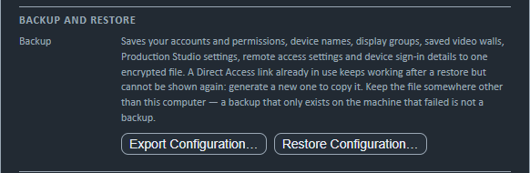
In Settings, on the computer LumaSuite runs on, Backup and Restore has two buttons. Export Configuration… saves accounts and permissions, device names, display groups, saved video walls, Production Studio settings, remote-access settings and the device sign-in details into one file, encrypted with a passphrase you choose (at least 8 characters, asked for once). Nobody can recover the passphrase for you. Keep the file somewhere other than this computer. A Direct Access link already in use keeps working after a restore, but it cannot be shown again; generate a new one to copy it.
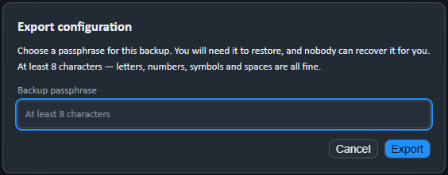
Restore Configuration… asks you to choose the file, then its passphrase, and then shows what the backup contains, and what it will remove, before changing anything (Figure 33). What is there now is saved first and put back if the restore fails: if any part of the restore cannot be written, every part already changed is put back, a file the restore created is removed, and Settings says the restore failed and that the previous configuration is back. If even that cannot be completed, the message says so, names the folder that still holds the copy taken first, and LumaSuite refuses further changes until it is closed and reopened. Settings that name this computer's own hardware (the network adapter, folders) are kept as they are, and the certificate and its private key are never part of a backup. Run a Scan afterwards so LumaSuite finds the equipment again. Device details the backup remembered (hostname, model, serial number) are filled into units LumaSuite already knows, matched by hardware address and never over something a scan has just learned, and never bringing back a unit you removed. If those details cannot be saved to this computer's disk, the restore of your settings still stands, Settings says the device details were not applied, and the next Scan learns them again from the equipment; nothing is reported as saved that was not. The confirmation names any account on this computer that the backup does not hold (it will be removed) and any it will replace with the backup's version. If nobody remembers a restored administrator's password, or the backup held no accounts at all, create or reset an administrator in Accounts on this computer: that always works from this computer, whatever the restore did.
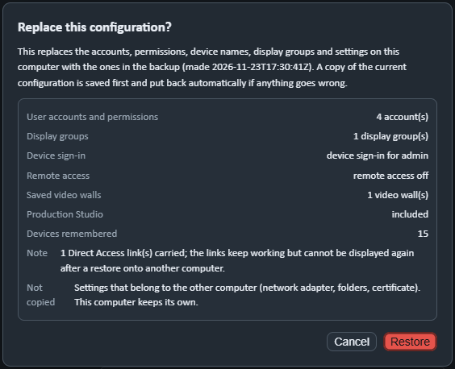
What a restore replaces. The backup is the authority for what it manages. Accounts and permissions, device names, display groups, saved video walls, Production Studio settings and the device sign-in are replaced as a whole, so anything on this computer that is not in the backup is gone afterwards. If the backup was made when there were no device names, display groups, saved video walls or Production Studio settings, those are cleared too, and the confirmation says so first. Accounts are part of that set: a backup that held none removes the accounts on this computer, and the confirmation says which. Device sign-in and remote-access settings are never removed just because a backup has none. A backup made by an earlier version does not say what it managed, so it changes only what it contains.
Who stays signed in after a restore. Someone who is already signed in stays signed in only if their account comes back exactly as it was: the same password, role, permissions (sources, displays, groups, video walls and which routing interfaces they may use), the same on or off state and the same Direct Access link. If any of those differs, everyone signed in as that account — by password or by Direct Access link, administrator or User — is signed out and has to sign in again, and gets the restored account. An account the backup does not hold, or holds switched off, is signed out too. An administrator whose account the restore did not change is not signed out. The confirmation names the accounts the restore will replace, and those are the people who will be signed out.
What stays on this computer. The network adapter and address, the folder paths, the certificate and its private key, and the activity log are never part of a backup and a restore leaves them alone. What is rebuilt. The discovered inventory comes back with a Scan (your saved names and groups are matched by hardware, not address), Direct Access links keep working but cannot be displayed again. Sessions. A person whose account was removed, disabled, or restored with a different password or Direct Access link is signed out at once, and a removed account's link stops working. A person whose account came back unchanged stays signed in, and what they may do follows the restored permissions from their next click. An account from before the Standard/Matrix routing choice keeps Standard routing and gets no Matrix.
While a restore runs, other changes to settings, names, accounts and groups are refused with a message that a restore is in progress, and work again a moment later. If the restore finished but LumaSuite could not load all of it without restarting, it says so and keeps refusing changes until you close and reopen LumaSuite, so nothing can overwrite what was restored. If the previous configuration could not be put back after a failure, the message says so and names the folder that still holds the copy taken first.
Known limitations
- Inventory size. LumaSuite is qualified for up to about 250 units. Larger lists (500 and 1,000 simulated units were tried) work, but background refresh rounds are long and the Matrix Routing page opens slowly. These counts were measured with simulated units, not with that many physical units (see How many units).
- Remote Access in Settings can be slow to appear. Settings looks up the computer's network adapters before it shows the Remote Access block, which can take a few seconds, longest the first time. Nothing else waits for it.
- Run only one LumaSuite at a time. Nothing stops a second copy from starting. It takes the next free port (or tells you a fixed port is busy), but both copies use the same saved settings, so leave only one running.
- LumaSuite uses a little more memory the longer it runs. In a six-hour test it grew by about 2 MB an hour while in use, mostly the activity log (which has a size limit), and not at all while idle. Whether that levels off for good has not been established, so close and reopen a LumaSuite that has been running for days.
- It contacts the Internet in two ways, and neither has an off switch. Shortly after it starts, and every seven days (six hours after a failed attempt), it asks Hall Research which firmware is published for each model. When you open Settings or press Check Now it asks GitHub for the newest LumaSuite release. Both are read-only lookups: they only read published version information and never download or install anything, including LumaSuite itself. The GitHub request identifies the software as
LumaSuite/<version>; the Hall Research request uses the standard identification of the software library. Both servers can see this computer's public address, as with any web request. No device names, addresses, serial numbers or settings are sent. With no Internet connection the last answer is kept and everything else works as normal. - The key LumaSuite generates for HTTPS is protected by the folder it is in. It is stored owner-only where the system supports that; on Windows it takes the access list of LumaSuite's data folder. It is never shown, logged or packaged, so keep that folder private.
- An administrator signed in remotely can change devices. The routing, hostname, NTP, HDCP, reset, firmware and Production Studio pages work remotely for an administrator, on devices LumaSuite already knows; Users never get them.
- A User's route to a saved video wall updates the saved wall. After a verified route the wall's saved source becomes what its displays now show, so the Video Wall page agrees with the room. Whether a User should be able to do that is a decision still to be made.
- HTTP Remote Access is not encrypted. Passwords and routing commands cross the network in clear; use it only on a network you trust, or choose HTTPS.
- Some behaviour belongs to the equipment. Whether a display's audio follows its video after a route is the display's own setting; LumaSuite reports it and does not change it. The encoder's own preview as a picture source has not been verified on hardware.
- LumaSuite is source-available, not open source. You may use it free of charge, including in business; selling it and distributing modified versions are not permitted. The full terms are in the License page and in the
LICENSEfile in the download (see About). - The Mac download has not been used on a Mac by the release process (see Supported computers).
Troubleshooting
- If Remote Access will not start HTTPS and says the certificate does not cover the address, the computer's address on the chosen network has changed since the certificate was made. Regenerate the certificate for this network (the fingerprint changes, so browsers warn again) or choose HTTP; LumaSuite never does either for you.
- If a Direct Access link stopped working after the computer's address changed, open the account: the link shown there is the current one. If the old address may now belong to another device, use Regenerate, which stops the old link everywhere.
- If a page is slow to open or refresh with several hundred units listed, see How many units. A list this long refreshes in rounds, and Matrix Routing takes longer to open.
- If Settings says There is no supported update package for this computer, this computer is not one of the two kinds LumaSuite is released for (see Supported computers); the update check is not saying LumaSuite is up to date.
- If a User says a route "did not confirm", the display accepted the command but does not hold the new source. Check the display and the source, then route again.
- If remote access will not turn on, Settings says why: no administrator yet, no certificate, a certificate for a different address, or the chosen network is not available.
- If a browser warns about the certificate, compare the fingerprint in Settings with the one in the warning, then continue.
- LumaSuite keeps a diagnostic log in its data folder, in a logs folder. It records what happened and every warning and error, never a password, and it is limited to a few megabytes: the oldest part is discarded as new lines are written. If you are asked for it, send the newest file there.
- If a User cannot see a source or display, check it is assigned to their account (or, for a group, that the group is). Assigning a group does not assign its members.
- If a source, display, group or wall is dimmed and says Offline, LumaSuite has found that it stopped answering. It is never written to while it is offline, and it comes back by itself once it answers again; there is no need to rescan. A unit that stays silent is checked less and less often, up to once every two minutes, so a large number of switched-off units does not slow the page or the units that work. Refresh on the Matrix page checks every unit at once.
- If adapters do not appear, reopen the app after connecting the network adapter and check the OS network settings.
- If the address LumaSuite opens on is different from last time, another program was using the port. Fix it for good with Use a fixed TCP port in Settings (see The local application port).
- If Check Now says Unable to check for updates, the computer could not reach GitHub or got an answer it could not read. That is not the same as being up to date; try again later or open the Releases page.
- If a device changed IP, rescan the subnet. MAC matching should update the existing unit.
- If Video Wall shows Modified, press Refresh From Devices to compare the saved wall with device state.
- If Sync Source would interrupt video, confirm the wall is Healthy first. Healthy displays should be skipped.
- If an import fails, confirm the file was exported from Video Wall and contains
kind: "lumasuite.video_walls".
About
LumaSuite (version loading...)
Copyright © 2026 Hall Research Technologies LLC
The License link opens the licence information built into this copy of LumaSuite. It shows LumaSuite's own licence, the Hall Research Technologies Source-Available Software License. Separate links list the open-source components that make up the application (web server, encryption, imaging, tray icon and so on) with the version and licence of each, and each licence's full text. The tray icon library (pystray) is licensed under the GNU Lesser General Public License; its source and instructions for rebuilding LumaSuite with a modified copy come in the download, beside LumaSuite.exe.